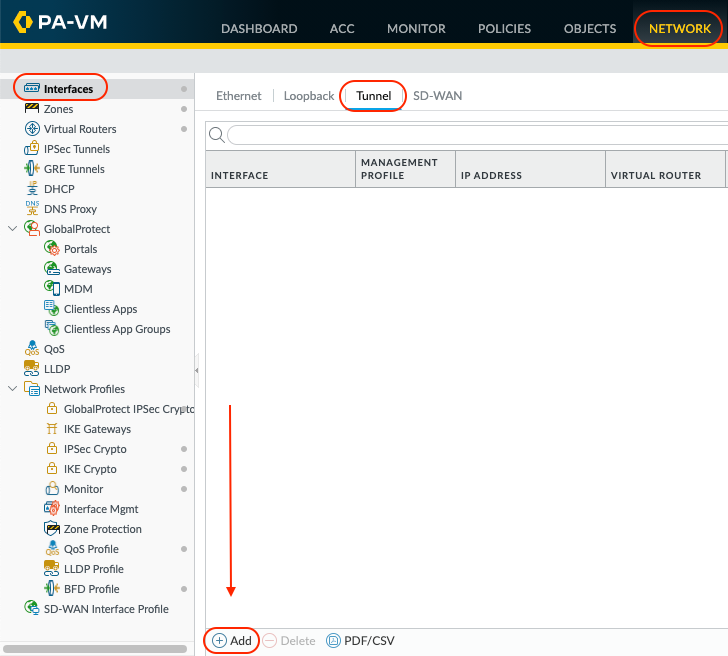
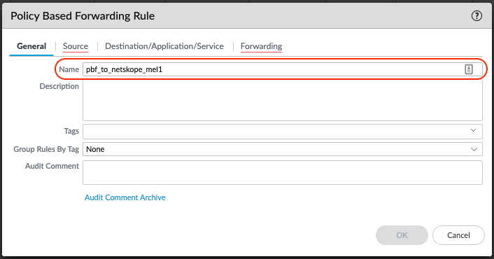
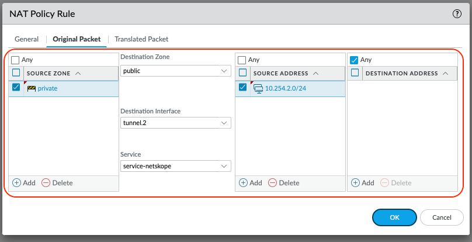

Palo Alto Networks NGFW Configuration
Before making any changes, create a backup and export the current running configuration on each NGFW. The configuration steps below are specific to the Example Configuration and will need to be modified to suit your environment.
The following tables detail the example configuration used for the Palo Alto NGFW in this guide.
Interfaces
Name | Virtual Router | Zone | Network | Interface IP |
|---|---|---|---|---|
ethernet 1/1 | default | public | 10.254.1.0/24 | 10.254.1.253 |
ethernet 1/2 | default | private | 10.254.2.0/24 | 10.254.2.253 |
tunnel.1 | default | public | 10.1.1.0/30 | 10.1.1.1 |
tunnel.2 | default | public | 10.1.2.0/30 | 10.1.2.1 |
Routing
Virtual Router | Interfaces | Name | Destination | Next Hop |
|---|---|---|---|---|
default | ethernet 1/1 ethernet 1/2 | default | 0.0.0.0/0 | 10.254.1.1 |
default | ethernet 1/1 ethernet 1/2 | private | 10.254.0.0/16 | 10.254.2.1 |
Rules
Name | Source Zone | Source Address | Destination Zone | Destination Address | Application | Service |
|---|---|---|---|---|---|---|
allow_icmp | private | 10.254.0.0/16 | public | any | icmp | application-default |
allow_dns | private | 10.254.0.0/16 | public | any | dns | application-default |
allow_ntp | private | 10.254.0.0/16 | public | any | ntp | application-default |
allow_http_https | private | 10.254.0.0/16 | public | any | any | service-http service-https |
NAT
Original Packet | Translated Packet | ||||||
|---|---|---|---|---|---|---|---|
Name | Source Zone | Destination Zone | Destination Interface | Source Address | Destination Address | Service | Source Translation |
snat_private | private | public | ethernet1/1 | 10.254.0.0/16 | any | any | dynamic-ip 10.254.1.253 |
Configure Tunnel Interfaces
To perform these steps, first log in to your Palo Alto Networks admin account. If you want to skip over the UI steps, CLI commands are provided at the end of this section to speed up the configuration tasks.
Go to Network > Interfaces > Tunnels . Click Add to configure the 1st tunnel interface.
 The read-only Interface Name is set to tunnel. In the adjacent field, enter a numeric suffix (1-9999) to identify the interface.
Assign a virtual router to the interface, or click Virtual Router to define a new one.
Select a security zone for the interface, or click Zone to define a new zone.

Select the IPv4 tab, and click Add.
Assign a tunnel interface IP and subnet mask. This IP subnet is only locally significant to the tunnel.
Select OK to save the tunnel interface.

Repeat the above steps to configure a 2nd tunnel interface: Change the tunnel suffix and the tunnel interface IP and subnet mask.


CLI Commands
Use these CLI commands to speed up the configuration.
# set network interface tunnel units tunnel.1 ip 10.1.1.1/30
# set network virtual-router default interface tunnel.1
# set zone public network layer3 tunnel.1
# set network interface tunnel units tunnel.2 ip 10.1.2.1/30
# set network virtual-router default interface tunnel.2
# set zone public network layer3 tunnel.2Configure the GRE Tunnels
If you want to skip over the UI steps, CLI commands are provided at the end of this section to speed up the configuration tasks.
Go to Network > GRE Tunnels. Click Add to configure the 1st GRE tunnel

Use GRE Gateway IP from 1st Netskope POP selected in step 1.5 as the Peer Address. In this example MEL1 will be used for the 1st tunnel (tunnel.1).
Enable Keep Alive so the GRE tunnel stays connected when/if the User traffic is idle.
Select OK to save.

Configure the 2nd GRE tunnel.
Repeat the above steps using the GRE Gateway IP from the 2nd Netskope POP selected as the Peer Address. In this example SY4 will be used for the 2nd tunnel (tunnel.2).

Commit the configuration.
The GRE tunnels should establish and can be verified using the CLI. Please refer to Verify GRE Tunnels are Established.
CLI Commands
Use these CLI commands to speed up the configuration.
# set network tunnel gre netskope_mel1 tunnel-interface tunnel.1 peer-address ip 163.116.198.36 # set network tunnel gre netskope_mel1 tunnel-interface tunnel.1 local-address interface ethernet1/1 ip 10.254.1.253/24 # set network tunnel gre netskope_mel1 tunnel-interface tunnel.1 keep-alive enable yes # set network tunnel gre netskope_sy4 tunnel-interface tunnel.2 peer-address ip 45.250.160.32 # set network tunnel gre netskope_sy4 tunnel-interface tunnel.2 local-address interface ethernet1/1 ip 10.254.1.253/24 # set network tunnel gre netskope_sy4 tunnel-interface tunnel.2 keep-alive enable yes # commit
Policy Based Forwarding (PBF)
PBF will steer the relevant traffic to the Netskope POP over the GRE tunnel. It’s recommended to forward Web Traffic (TCP 80/443 etc.) only. When creating PBF rules, it is recommended to be as specific as possible to ensure the correct traffic is sent to Netskope Cloud. If you want to skip over the UI steps, CLI commands are provided at the end of this section to speed up the configuration tasks.
Go to Objects > Services > Add.

Configure a custom service for Netskope traffic. This provides the flexibility to easily add additional custom ports at a later date.
Your TCP 80 and 443 traffic should be steered to Netskope by default.
Select OK to save.

Go to Network > Network Profiles > Monitor > Add.
This monitor will be used to check the GRE tunnel connectivity is established using ICMP. If the monitor fails, the tunnel should failover to the 2nd GRE tunnel.

Give the monitor a Name and change the Action to Fail Over. Adjust the Interval and Threshold to your liking.
Select OK to save.

Go to Policies > Policy Based Forwarding > Add.

Configure the PBF Rule to steer traffic over the 1st GRE tunnel (tunnel.1 interface), which corresponds to MEL1 POP.
Give the PBF Rule a Name
 Select the Source tab and enter the criteria specific to your environment.

Select the Destination/Application/Service tab.
Add the SERVICE service-netskope that was configured in step 1 of this section.

Select the Forwarding tab
Set the Action to Forward
Select tunnel.1 as the Egress Interface
Enable the Monitor and select the netskope_gre Profile created in step 5 of this section.
The IP Address is the Probe IP Address of the 1st Netskope POP selected. In this example MEL1, will be used for the 1st tunnel.
Select OK to save.
Configure the PBF Rule to steer traffic over the 2nd GRE tunnel (tunnel.2 interface), which corresponds to SY4 POP.
Repeat the above steps: Change the Name, Egress Interface to tunnel.2 and the Monitor IP Address.


CLI Commands
Use these CLI commands to speed up the configuration.
# set service service-netskope protocol tcp port 80,443 # set network profiles monitor-profile netskope_gre interval 3 threshold 5 action fail-over # set rulebase pbf rules pbf_to_netskope_mel1 action forward egress-interface tunnel.1 monitor ip-address 10.198.6.209 profile netskope_gre # set rulebase pbf rules pbf_to_netskope_mel1 source 10.254.2.0/24 destination any service service-netskope from zone private # set rulebase pbf rules pbf_to_netskope_sy4 action forward egress-interface tunnel.2 monitor ip-address 172.24.16.13 profile netskope_gre # set rulebase pbf rules pbf_to_netskope_sy4 source 10.254.2.0/24 destination any service service-netskope from zone private
NAT Settings
Once a packet matches the criteria of a single NAT rule, the packet is not subjected to additional NAT rules. Therefore, your list of NAT rules should be in order from most specific to least specific so that packets are subjected to the most specific rule you created for them.
When steering traffic to a Netskope POP via GRE, Secure NAT (SNAT) needs to be disabled. This allows the Netskope Cloud XD the “engine” of Netskope’s platform to see the real Source IP of the traffic for Policy and Logging purposes. In this example more specific SNAT rules need to be created to disable SNAT.
The SNAT/NAT configuration in this example prior to adding the specific SNAT rules for Netskope GRE is detailed below for reference. The current SNAT configuration will SNAT all traffic going from private to public zone with a source address of 10.254.0.0/16 to 10.254.1.253 (ethernet1/1 interface IP).
 |
If you want to skip over the UI steps, CLI commands are provided at the end of this section to speed up the configuration tasks.
Go to Polices > NAT and click Add.

Configure the NAT Policy Rule to disable SNAT for traffic steered to 1st GRE tunnel (tunnel.1 interface).
Give the NAT Policy Rule a Name

Select the Original Packet tab.
Configure the Source Zone, Destination Zone, Source Address to be as specific as possible. In this example, only be concerned with Source Addresses in the 10.254.2.0/24 network.
Set the Destination Interface to tunnel.1.
Set the Service to service-netskope.
Select OK to save.

Select the Translated Packet tab.
Leave the defaults to None.
Select OK to Save.

Configure the NAT Policy Rule to disable SNAT for traffic steered to 2nd GRE tunnel (tunnel.2 interface).
Repeat the above steps: Change the Name and change the Destination Interface to tunnel.2

 Re-Order the NAT Policy Rules.
Depending on your environment, the SNAT/NAT rules will need to be re-ordered so the most specific rules are at the top. In this example I have placed the NAT Policy Rule to disable SNAT at the top.

Commit the final configuration and test.
CLI Commands
Use these CLI commands to speed up the configuration.
# set rulebase nat rules dont_snat_netskope_mel1 from private to public source 10.254.2.0/24 destination any service service-netskope to-interface tunnel.1 # set rulebase nat rules dont_snat_netskope_sy4 from private to public source 10.254.2.0/24 destination any service service-netskope to-interface tunnel.2 # move rulebase nat rules dont_snat_netskope_mel1 top # move rulebase nat rules dont_snat_netskope_sy4 after dont_snat_netskope_mel1 # commit